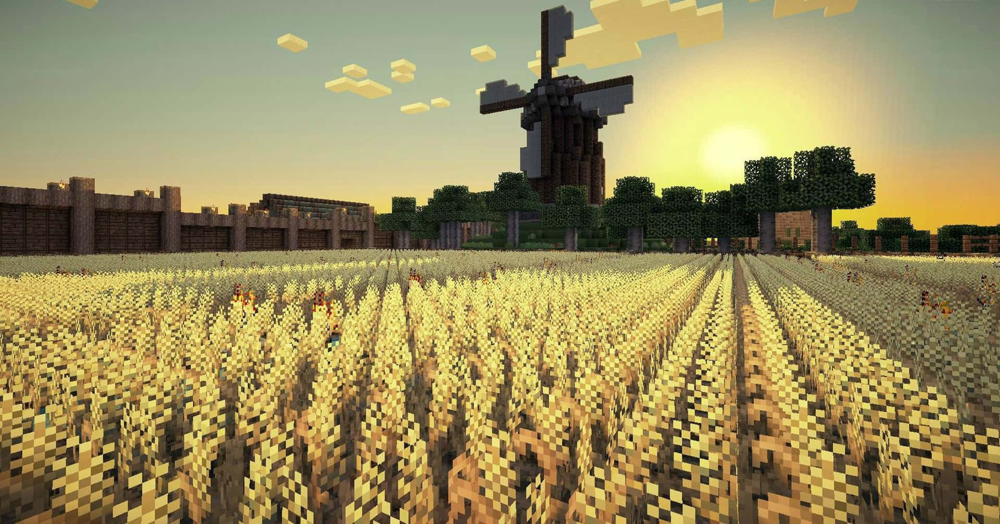

Minecraft explorers
Last Imperius Minecraft
Exploradores e programadores especialistas em minecraft
- Melhores Farms de minecraft
- Dicas de exploração
- Técnicas e segredos do minecraft
- Links de Seeds e mapas

- As vezes podemos encontrar muitos itens na farm, sim... Isso se repete
- As vezes podemos encontrar muitos itens na farm, sim... Isso se repete
- As vezes podemos encontrar muitos itens na farm, sim... Isso se repete
- As vezes podemos encontrar muitos itens na farm, sim... Isso se repete
Site oficial do minecraft